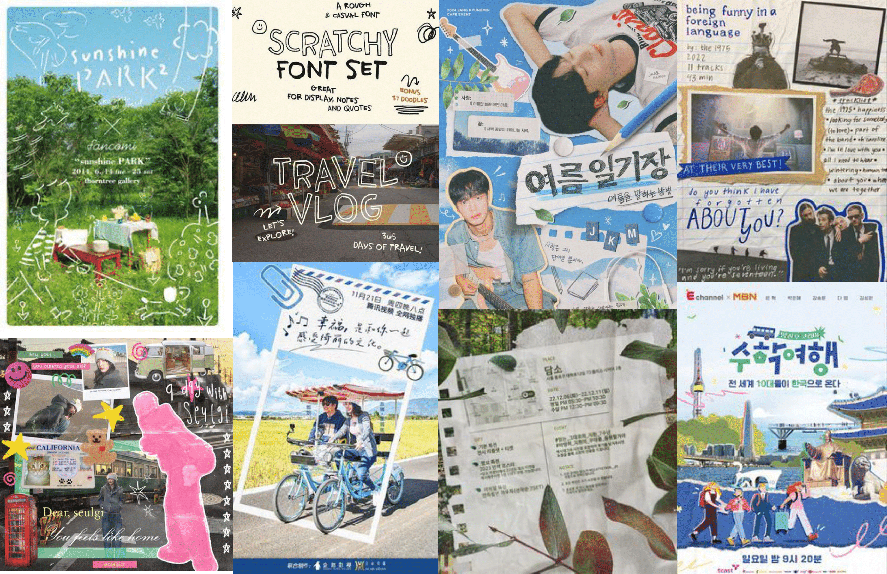
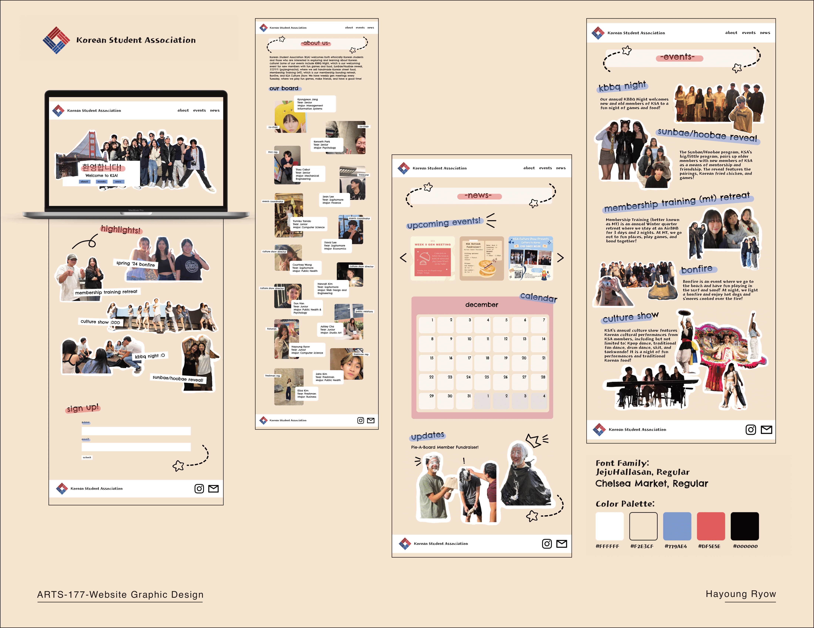

korean student association
web design

toolkit
Programs Used: Figma, Webflow
the project
KSA (Korean Student Association) currently has a page on the Multicultural Center's (MCC) website. The current page, however, is outdated and is not personalized to the club. I redesigned the website in a way that would portray the liveliness of KSA to encourage future members to join the club. The design is done in a scrapbook-type style to evoke memories of youth and childhood to demonstrate to the audience (SCU students) that KSA is the place to make good, long-lasting memories. However, due to time constraints, I opted to use Webflow to create a simple mockup of the events page.
moodboard
wireframes
final product
+ back to projects +